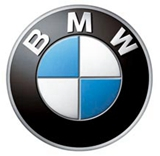
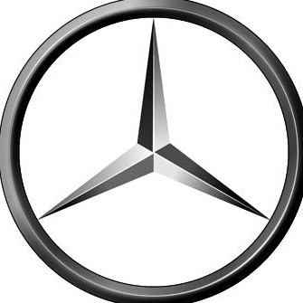
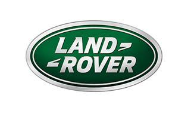

汽车品牌合集
宝马品牌
 BMW的前身是一家飞机工厂,成立于1916年3月7日，最初以制造流线型的双翼侦察机闻名于世,这家公司的名字叫BFW（Bayerische FlugZeug-Worke），“巴伐尼亚飞机制造厂”，公司始创人名为吉斯坦·奥托（Gustan Otto），其父是鼎鼎大名的四冲程内燃机的发明家。
宝马标志中间的蓝白相间图案，代表蓝天，白云和旋转不停的螺旋浆，喻示宝马公司渊源悠久的历史，象征该公司过去在航空发动机技术方面的领先地位，又象征公司一贯宗旨和目标：在广阔的时空中，以先进的精湛技术、最新的观念，满足顾客的最大愿望，反映了公司蓬勃向上的气势和日新月异的新面貌。
| 中文名称 | 宝马 | 英文名称 | Bavarian Motor Work |
| 创立时间 | 1916年3月7日 | 创始人 | 吉斯坦·奥托 |
| 总部 | 德国巴伐利亚州慕尼黑 | 官网 | http://bmw.com |
| 所属公司 | BMW集团 | 经营范围 | 高端汽车 |
奔驰品牌
 梅赛德斯-奔驰，德国汽车品牌，汽车的发明者，被认为是世界上最成功的高档汽车品牌之一，其完美的技术水平、过硬的质量标准、推陈出新的创新能力，以及一系列经典轿跑车款式令人称道。奔驰三叉星已成为世界上最著名的汽车及品牌标志之一。
1886年自从奔驰制造了第一辆世界公认的汽车后，一百多年过去了，汽车早已度过了他的百岁寿辰，而在这一百多年来，随着汽车工业的蓬勃发展，曾涌现出很多的汽车厂家，也有显赫一时的，但最终不过是昙花一现。到如今，能够经历风风雨雨而最终保存下来的，不过三四家，而百年老店，仅有奔驰一家。
| 中文名称 | 戴姆勒梅赛德斯奔驰汽车公司 | 英文名称 | Mercedes-Benz |
| 创立时间 | 1871年 | 创始人 | 卡尔·本茨、戈特利布·戴姆勒 |
| 总部 | 德国 | 主要产品 | E-class，R-class，SLK，S-class |
| 所属公司 | 戴姆勒集团 | 经营范围 | 高端汽车生产 |
路虎品牌
路虎（Landrover）是英国豪华全地形SUV品牌 ，创始人是莫里斯·维尔克斯 ，创立于1948年。“Landrover”在中国大陆翻译成“陆虎”，进入中国上市时发现“陆虎”两个字已被抢注商标，“Landrover”在中国注册为“路虎”。路虎现拥有三大产品家族：揽胜系列、发现系列、Defender系列。
罗孚（Rover）是北欧的一个民族，由于罗孚民族是一个勇敢善战的海盗民族，所以罗孚汽车商标采用了一艘海盗船，张开红帆象征着公司乘风破浪、所向披靡的大无畏精神。兰德-罗孚是全球著名的越野汽车，标志就是英文：LAND-ROVER。
| 公司名称 | 路虎 | 英文名称 | LAND ROVER |
| 创立时间 | 1948 | 创始人 | 莫里斯·维尔克斯 |
| 官网 | http://www.landrover.com/ | 主要产品 | 揽胜、揽胜运动版、星脉、极光 |
| 所属公司 | 路虎汽车集团 | 经营范围 | 专业越野车的生产与销售 |